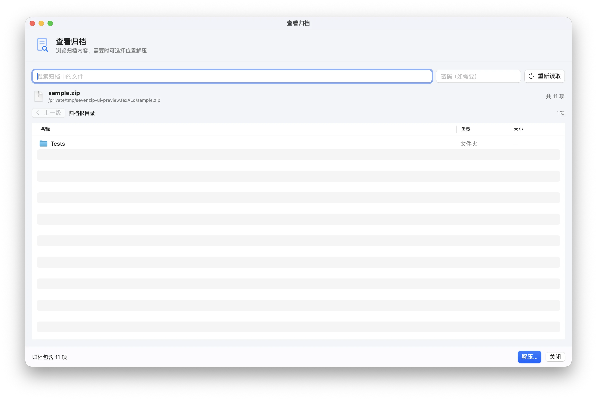

压缩与解压
创建 7z、ZIP、TAR；读取 7z、ZIP、RAR、TAR、GZIP、BZIP2 与 XZ。支持密码、字典大小、自定义分卷和实时进度。
为 macOS 而生 · 所有处理均在本机完成
用原生界面完成压缩、解压和归档浏览；在 Finder 右键直接操作文件，再把 Excel 文件管理与 Hash 校验收进同一个工作台。

不只是解压软件
从归档到文件清单，每项工具都遵循同一套原生 macOS 交互。
创建 7z、ZIP、TAR；读取 7z、ZIP、RAR、TAR、GZIP、BZIP2 与 XZ。支持密码、字典大小、自定义分卷和实时进度。
无需先打开主窗口。直接解压到同名目录、创建 7z 或 ZIP，也能把文件夹清单导出为桌面上的 XLSX。
导出目录清单；按 XLSX 路径列预览并批量复制文件，或安全移动到 macOS 废纸篓。
本地计算 MD5、SHA-1、SHA-256 与 SHA-512，并直接对照期望值确认文件是否完整。
更短的操作路径
快速任务进入专用窗口，不闪现主界面，也不会把你带离当前文件夹。
在 Finder 中选择一个或多个文件、文件夹或归档。
从右键菜单选择解压、压缩或导出 Excel 文件清单。
查看参数与连续进度；完成后可直接在 Finder 中定位输出。
打开，不必解压
归档浏览器按目录逐层展示内容，保留常见文件类型图标。双击文件夹继续浏览，再决定是否解压。

能力对比
FileNest 不替换 Finder，而是补齐高级归档和文件工作能力。
开放、透明、可构建
FileNest 不联网、不上传文件、不采集遥测。应用源码公开，归档内核的第三方许可清晰可查。